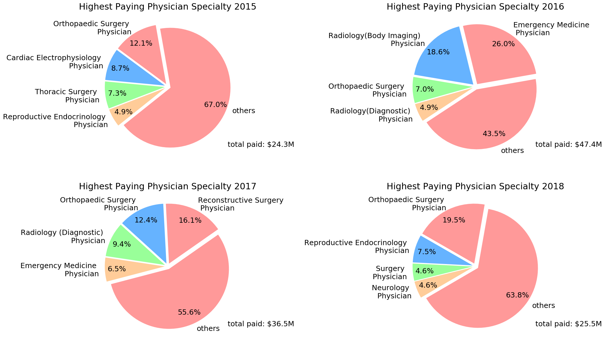

Results
Intro: TODO set up the motivation to read the following plots closely
How do total daily payments vary in Wisconsin 2015-2018?

2015, 2016, and 2017 had a four total daily payments greater than $1.5M. There was one daily payout total for $25M which dwarfs the median payout of $16,580 across the years. 2018 did not have the outragous payouts as the other years. In 2018 most days had total payments for less than $100K, however there appears to be some patern of +$400K payouts every other month.
Corporations are paying a lot of money on a daily basis to teaching hospital and physicans. This means that teaching hospitals and physican's are key steakholders for corporate medical companies. But where is the money actually going and for what reasons? And what is going on with enormous payment dates?
Video. Not sure what to title this animation.
TODO: Quantitative observations about the above plot [ie: the largest categy, B, accounts for 73% of the total]
TODO: Conclusions from plot [ie: what does this mean? does it pose new questions? Are there any implecations to these findings? This is where you insert your smarticles. Make sure the conclusions are SUPPORTED by the plot. The conclusions CANNOT be too far of a stretch.
What is the trend for the number of daily payments in Wisconsin?

There is a very weak correlation between day's since 1/1/2015 and the number of payments made. linear trend line captured with an intercept of 252.5 and a slope of -.9417. The interpretation is that if you move foward one day, you should expect about 1 less payment for Wisconsin. There is a noticable horizontal gap in the scatter plot; there are few days with over 100 and under 200 daily payments.
This means that when medical companies write checks, they tend to write alot at once. Moreover, the plot shows that number of daily payments made stayed reletivly constant between 2015 and 2018. If the number of payments would have declined over time, it could suggest a tighter concentration recipients reciving all money. Then again, it could also be interpreted that medical corporations are having less influence on physicians and teaching hospitals. To explore this more, we need to dive deeper into the data. Let's start with who is getting the money.
Where is the money going?

Across the four year, Physican's have recieved over 30X compared to teaching hospitals. Physicians have recieved $129,968,000 while teaching hospitals recieved only $3,805,000.
To us, this was mind-blowing. The University of Wisconsin Hospital, Children's Hospital, and Froedtert Hospital are just a few examples of teaching hospitals. These hospitals are enormous and we would have expected corperations to write bigger checks to these institutions. Of course there are far fewer teaching hospitals than physicians, but it we still would hav expected more money to be going to teaching institutions. Are the physican's reciving payments mainly from highly populated cities in Wisconsin?
Where are the physicians recieving money from corporations located?

There are three dominating clusters of data in the southeast corner of Wisconsin. Moreover, 71% of the physicians are located in the souther-half of wisconsin. As you move north, there are less physician's recieving payments from medical companies.
Results of this plot reflect population densities of the state. The largest cluster in Milwaukee, and other two clusters in Madison and Green Bay. As you move northwest the state becomes quite rual. The big take-away is that payments being made to physicians reflect population density. Even if you live in Baraboo, WI your physician might be recieving checks from medical companies.
How are the physician's getting paid?

Cash is king, and physican's are receiving alot of it. 97% of payments to physicans are cash, while only 3% are for in-kind items or services values are notably similar at $4.1M. The cash payouts are not consistent across the years; there is about a $23M difference from 2016 to 2015 and 2018. No physicians have recieved dividends or stocks, and only a sliver of payment in the form of options/ownership interest occured in 2015.
In kind items/services are donations in the form of labor, tools, or services of some kind. Although this is a small amount compared to cash, $4.1M each year is still a lot of money and it would be interesting to know what exactly companies are "donating" to physicians. It is re-assuing that since 2015 not a single physician has recieved dividends, stock, or options/ownerships because they would signal a larger conflict of interest compoared to cash. However, we still have the elephant in the room. Why are physicians reciving massive (cash) payments?
What are the payments going to physicians classified as?

Between the four years 51% of all the payments to physicains were unclassified. However, since 2016 there has been an 80% drop in payments being unclassified. In 2017 and 2018 payments categorized as devices surpassed biological by about 7X, and drug by about 2.5X.
The 80% decrease in unclassified payment types is great, however the 80% decline amounted for roughly $19M. There was not an aggregated $18M increase in the following categories which is curious? Moreover, It is interesting that only thousands of dollars were assigned to the medical supply category. Is there another way to more accuratly depict what the physician's are recieving the money for?
What are the payments for?

In 2016 there was $30M paid for service compensation. Consulting fee's have steadily increaed by 39% from 2015 to 2018. Royalty or licence has been consistent at $7.5M besides a $15M royalty/license payout year in 2017. Food, beverage, travel, and lodging has been constant across the years between $2M-$3M.
Distingusing consulting fee's from service compensation questions what "service compensation" really means. If I am a physician and I sell company XYZ's special drug/device and I get kick-back for it, is that considered service compensation? If so, that raises startling questions about the judgement of our physicians. Unfortunatly, without better information, we have reached a dead-end on this front. In a similar light, one could raise the same questions about the royalty/license category. What do physicians do in order to recieve license or royalty checks, and is it ethical? Let's explore more about the types of physician specialties.
.What types of physicians are reciving the most money?
The top four physician specialties have taken home between 33%-56.5% of the total. However, the top categories change year-to-year. Only Orthopediaci Surgery was in the top 4 each year. Female reconstrutive surgery and emergency medicine had suprising dominating appearences in 2017 and 2016 respectivly.
Othopedics involves the muscles and joints which makes sense why this specialty consistently attracts a lot of money from corporations. It is funny to see a massive serge of money going to female reconstructive physicians in Wisconsin after face-lifts, bow-tox, and plastic surgey went mainstream. But what category is the money mainly going towards: drugs, devices, supplies?
What does the payout data look like over time for the overall top 4 physician specialties?

TODO: Quantitative observations about the above plot [ie: the largest categy, B, accounts for 73% of the total]
TODO: Conclusions from plot [ie: what does this mean? does it pose new questions? Are there any implecations to these findings? This is where you insert your smarticles. Make sure the conclusions are SUPPORTED by the plot. The conclusions CANNOT be too far of a stretch.